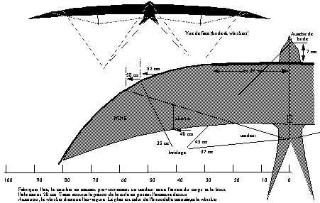
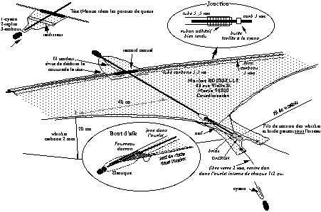

Hirondelle ? non, Martinet
Pour ceux qui aiment les oiseaux mais qui ont trouvé que Jonathan le goéland (Le Lucane 76) ou King l'aigle (Le Lucane 77) étaient bien difficiles à réaliser ou trop complexes à régler, voici Martin, le martinet. Il est simple à construire, simple à régler, et simple à piloter. Allez, faites-vous plaisir !
Pour quelques photos, voyez la présentation "Le Martinet"
La structure principale se compose d'un arc, démontable bien sûr pour vous éviter le transport sur la galerie... La partie médiane est un tube de 5,5 mm en carbone. Pour les bouts d'aile, j'ai essayé avec du tube de 4, les 2 cotés ont explosé au premier vol ! J'ai donc mis un jonc de carbone 3 emboîté dans le tube central. Comme les tubes ne sont pas conçus pour résister à des contraintes de l'intérieur vers l'extérieur, il faut renforcer la zone où le jonc 3 s'emboîte par une surliure collée à la cyano pour assurer. Ne pas avoir peur aussi d'emboîter sur une bonne longueur (4 cm).


L'arc est simplement enfilé dans l'ourlet avant. Pour le démontage, on défait une extrémité d'aile, on déboîte les joncs, et on fait coulisser le tube central pour dégager le point milieu, afin de pouvoir plier le tube contre le corps. Plus simple à faire qu'à expliquer...
Le bec est un petit fourreau conique en dacron. Pour soulager la tension de la tête, j'ai tendu une ficelle entre le centre de l'arc et la durit d'attache avant de bride. Sinon, le bec finit par se percer (surtout si on fait un atterrissage par planté de tête...) ou se découdre. Mettre un petit raidisseur dans l'ourlet de la tête pour la tenir en largeur.


Les whiskers sont bandés par un fil qui ne prend que 4/5 de l'aile pour ne pas trop la courber. Ils ne seraient pas nécessaires en vol rapide avec du vent (le creux se fait tout seul...). Mais à faible vent, ou faible vitesse (bord de fenêtre, stop), la maniabilité est directement fonction du creux que les whiskers maintiennent.
La queue est un peu chinoise. J'ai essayé diverses solutions (fourreaux, micro-durits...) pour les extrémités, qui doivent rester fines, mais ça s'use ou ça s'arrache. Finalement, j'ai un peu laissé dépasser les joncs au bout, et j'ai collé la toile sur le jonc à la cyano. Les puristes trouveront ça shocking, mais ça résiste à l'usure, et les joncs accrochent bien par terre quand on tire Martin sur le dos pour décoller. Il faut aussi coller sur le tube central le bout de durit qui sert de butée à l'avant de l'armature de la queue.
Le bridage est à peu près classique type delta.
L'arc ne permet pas de tendre très fort le bord de fuite, alors il vibre et Martin est un peu trop bruyant à mon goût, mais pas de façon gênante. On peut mettre un petit nerf dans le bord de fuite comme indiqué, ce qui diminue la vibration.
Au final, Martin est proche d'un delta et se manie comme lui. Mais sa souplesse ne lui permet pas des angles droits bien nets. Il est du type rapide, il ne faut pas s'endormir. Quand le vent force, les joncs se courbent et les rafales sont bien encaissées (essayé jusqu'à force 5). Quand on tire sec, les joncs se courbent de même et on obtient des accélérations spectaculaires (et bruyantes...). En sens inverse, on peut faire des tortues, voire des yoyos. Les axels me semblent difficiles vue la souplesse. Je n'y arrive pas, mais un spécialiste à qui je l'avais prêté m'en a fait un, donc c'est possible.
La prochaine fois, je vous parlerai d'un croisement de goéland et de martinet qui promet bien... Cela paraît contre nature, mais dans le monde technico-poétique du cerf-volant, tout peut être fécond. A bientôt !
Maxime ROUSSELLE
Complément 2004 :
1) La version construite par les Cavaliers du Ciel est légèrement différente. Elle comporte un raccord central qui facilite le démontage, des petits embouts au bout de la queue pour assurer le collage et protéger de l'usure. L'emboîtage du 3 dans le 5,5 pour l'arc transversal est reforé car ça ne rentrait pas avec le 5,5 employé (à parois plus épaisses), mais le forage n'est pas toujours assez profond ce qui amène des casses.
2) On peut fretter l'emboîtement avec un simple ruban adhésif bien tendu, c'est plus simple que de la ficelle collée, et ça tient 2 ans environ (selon pluies). Pré-étirer le ruban adhésif avant de l'enrouler autour du tube. Ne pas utiliser de ruban type électrique qui peut s'étirer indéfiniment.
3) Maintenant, je sais faire des axels, mais faut pas beaucoup de vent. Pour les yoyos, j'ai peut-être été un peu optimiste...